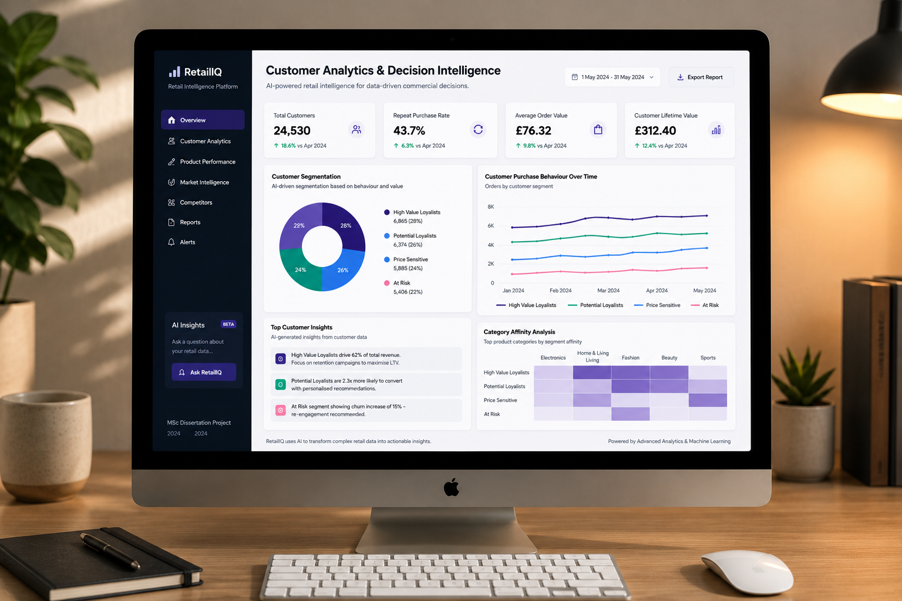

Customer Segmentation & Churn Prediction · MSc Thesis Project
My MSc thesis project: an end-to-end analysis of 29,729 fashion retail records across the UK and US. I segmented the customer base by behaviour rather than demographics, built and compared five machine learning models to predict which customers were about to churn, and translated both into retention actions a marketing team could actually run.
Most retailers hold rich transactional data and lack the analytical layer that turns it into customer strategy. This is the work that happens before a campaign brief gets written: who the customers are, who is about to leave, and what should change as a result.
29,729 complete observations covering what customers buy and how they engage beyond the transaction.
The data split into two halves that matter differently. Product attributes covered price point, brand, category (Footwear, Tops, Bottoms, Outerwear) and style (Streetwear, Vintage, Formal, Sporty). Customer attributes covered age, purchase history, ratings, review counts and social engagement.
That second half is what made the analysis worth doing. Transaction data alone tells you what someone bought. Engagement data tells you whether they are still paying attention, and that turned out to matter more than anything else.
Scoring every customer on recency, frequency and monetary value, then grouping them by what those scores imply.
rfm = df.groupby('CustomerID').agg({
'PurchaseDate': lambda x: (snapshot_date - x.max()).days,
'OrderID': 'count',
'Revenue': 'sum'
}).rename(columns={'PurchaseDate':'Recency',
'OrderID':'Frequency',
'Revenue':'Monetary'})
# Quantile-based scoring: 1 (worst) to 5 (best)
rfm['R_Score'] = pd.qcut(rfm['Recency'], 5, labels=[5,4,3,2,1])
rfm['F_Score'] = pd.qcut(rfm['Frequency'], 5, labels=[1,2,3,4,5])
rfm['M_Score'] = pd.qcut(rfm['Monetary'], 5, labels=[1,2,3,4,5])
The scoring produced five behavioural groups, each with a different relationship to the brand and a different action attached to it.
| Segment | R | F | M | Marketing action |
|---|---|---|---|---|
| Champions | High | High | High | Loyalty rewards, early access, advocacy programmes |
| Loyal Regulars | Mid | High | Mid–High | Member benefits, category recommendations, seasonal targeting |
| Potential Loyalists | High | Low | Mid | Onboarding nurture, product education, second-purchase incentive |
| At-Risk | Low | Mid | Mid | Win-back before full lapse, highest overlap with churn model |
| Lapsed | Low | Low | Low | Cost-efficient reactivation only, not full campaign spend |
Five classifiers trained and compared, judged on recall rather than accuracy.
The choice of metric was the first real decision. Accuracy rewards a model that plays it safe, and in churn work the cost of missing a customer who leaves is far higher than the cost of a false alarm. Recall was therefore the metric that mattered.
The findings that changed how I read the customer base.
Four recommendations a retention team could implement directly.
What the project taught me, and what I would do differently.
The most valuable output was not the model. A well-performing churn classifier is the start of a conversation with a marketing team, not the end of the analysis, and the work only lands if the findings become actions the business can run. I would spend more time on that recommendation layer next time, not on squeezing further accuracy out of the model.
The other lesson was about language. "Cluster 3" means nothing to a campaign manager, whereas "Potential Loyalists" tells them exactly who they are talking to and what the opportunity is. Naming segments in plain English is one of the highest-value things an analyst can do for a marketing team, and it costs nothing.